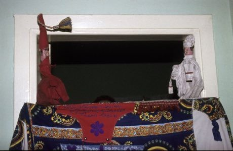
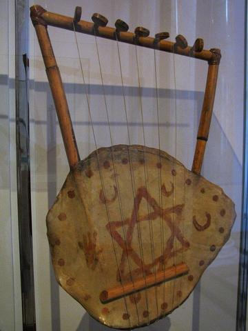
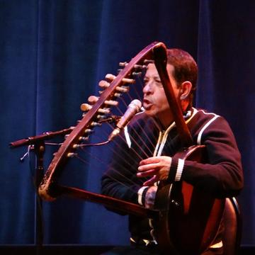
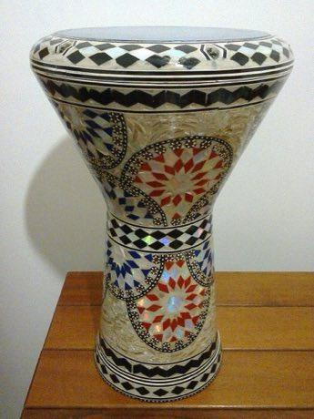

Home / Classical Worlds / Africa: Nile and the Horn
Playable heritage gameAragoz Hand-Puppet Booth
Also known as aragoz · أراجوز
A squeaky-voiced glove puppet in a red cap pops up over a little booth and jokes with the crowd about daily life. Street performers in Egypt have played Aragoz for centuries, using a small reed in the mouth for his voice.

How to play
- Read the scene and choose what Aragoz and his friends do.
- Wit solves the puzzle; goodwill wins the crowd.
- Answer the puzzle with a clear head and keep the crowd on your side.
- Reach the last scene to see your stars.
Rules at a glance
- Hiding something never works for long.
- Some endings are sweeter than others.
- Both wit and goodwill are needed for three stars.
About the tradition
Aragoz is the glove puppet of Egypt: a wooden head, a red cap and a cloth cloak over the performer's hand, played from a small cloth booth with a high voice made by a small reed held in the mouth. It has been a street and fair entertainment for centuries, full of jokes about officials, neighbours and money, and it is recognised internationally as living heritage.
Origins
Usually placed in the era of Classical Worlds (about 1000 BCE to 500 CE), although its exact origins are uncertain, within the cultural world of Africa: Nile and the Horn.
Credits
- Story: World Heritage Games (original)
- Photo: Carel van Leeuwen / Tropenmuseum, CC BY-SA 3.0, source on Wikimedia Commons
- Text: CC BY-SA 4.0, World Heritage Games.
Sources

Get the app
Aragoz Hand-Puppet Booth is one of 10 stories and theatre games in the Story & Theatre of the World app for iPhone, iPad and Android. Live on Google Play. Submitted to the App Store; in review, and the store link appears here the day it goes live. One app, many traditions, no account needed.
More games to play


Wayang Shadow Puppets
Indonesia · Performance and storytellingPlay preview · in the Story & Theatre of the World app
Water puppet pond theatre
Vietnam · Performance and storytellingPlay preview · in the Story & Theatre of the World app
Yoke thé
Myanmar · Performance and storytellingPlay preview · in the Story & Theatre of the World app

More from Egypt

Cafe dominoes
Egypt · Board and table games
Darbuka Iqa'at Rhythm Drum
Egypt · Musical instrumentsPlay preview · in the Conga, Daf & Udu Drums app
Egyptian Fractions and Doubling
Egypt · Puzzles and mind games
Khayamiya Tentmaker Applique
Egypt · Crafts and making

Mashrabiya Lattice Joinery
Egypt +1 · Crafts and makingPlay preview · in the Paper & Paint of the World app